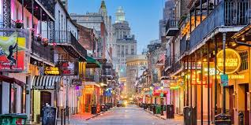
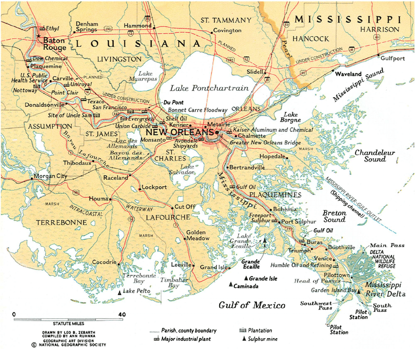
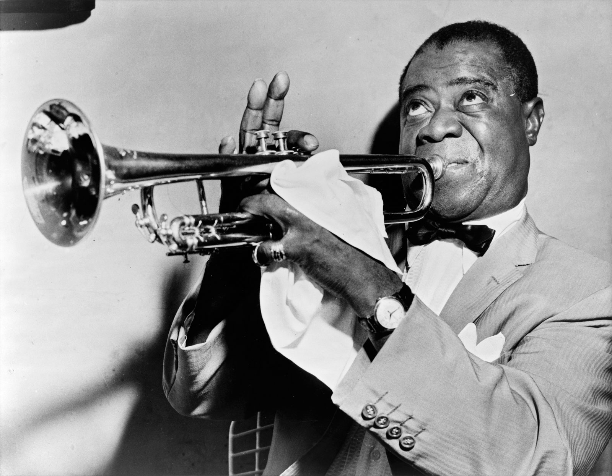

Bienvenue à la Nouvelle Orléans!


Musicien Honoré: Louis Armstrong

- Louis utilise son nom de naissance pour son nom de stage, mais il a beaucoup de surnoms comme "Satchmo" et "Dipper"
- Il est né dans la Nouvelle Orléans, et il y habitait pour tout sa vie - mais il a visité Paris
- Il a utilisé la marijuana souvent dans sa vie
Restaurants Célèbres:
- Upperline (4.7 sur 5)
- Irene's (4.7 sur 5)
- Coquette (4.7 sur 5)
- Jacques-Imo's (4.7 sur 5)
Activités:
- Visiter beaucoup de cimetières et crypts
- Visiter le Quartier Français pour expériencer la culture
- Visiter les bayous et manger la cuisine cajun
Information:
- La Nouvelle Orléans célèbre Mardi Gras chaque mai dans l'année
- La culture Créole influencait la culture de la Nouvelle Orléans
comme la culture français
- Beaucoup de jeux avec les cartes comme "poker" est né ici
Clique ici pour rentrer à la page d'accueil